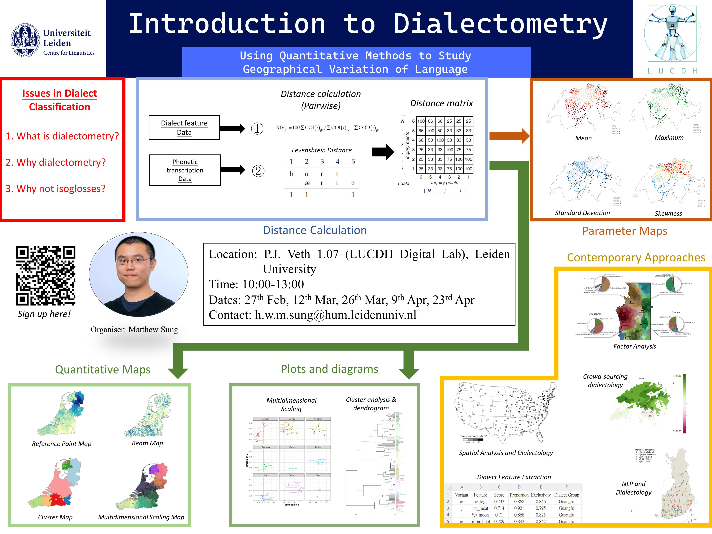

News
People
Publications
Contact
Categories
All
(20)
BERT
(1)
Computational Linguistics
(1)
Conference
(1)
Deep learning
(3)
Dialectology
(1)
Dialectometry
(1)
Indonesia
(1)
Leiden HumAN
(2)
LLMs
(3)
New member
(2)
News
(2)
Oxford Internet Institute
(1)
Talk
(3)
Talks
(1)
Text alignment
(1)
Vacancy
(2)
Workshop
(8)
Home
News
Congratulations Justin!
News
We are happy to announce that Justin has been accepted as a PhD student at the Complex Connection Lab, Network Science Institute, Northeastern University! This is an…
Aug 15, 2024
Admin
Research Assistantship for Digital Warfare in the Sahel
Vacancy
The Leiden University Institute for History invites applications for a research assistant for the NWO-funded project ‘Digital warfare in the Sahel: popular networks of war…
Aug 8, 2024
Admin
Aron starts SNU Kyujanggak Junior Research Fellow
News
We are pleased to announce that Aron has been selected as a Junior Research Fellow at the Kyujanggak Institute of Seoul National University in South Korea! This prestigious…
Jun 1, 2024
Admin
Computational Linguistics in the Netherlands (CLIN 34)
Conference
Computational Linguistics
The 34th Meeting of Computational Linguistics in The Netherlands (CLIN 34), organized by the Leiden University Centre for Linguistics (LUCL), in collaboration with the…
Mar 28, 2024
Jelena Prokic

Introduction to Dialectometry
Workshop
Dialectometry
Many proposals of dialect classification use isoglosses to identify dialect areas. However, isogloss maps are often messy, and they are also susceptible to some further…
Feb 7, 2024
Matthew Sung
Deep Learning for the Humanities Workshop
Workshop
Deep learning
Deep-learning has been used in many recent applications You’ve likely seen use cases such as Stable diffusion - image generation, ChatGPT text generation, image…
Feb 6, 2024
Aron van de Pol
Leiden HumAN researchers talk at Oxford Internet Institute
Talk
Leiden HumAN
Oxford Internet Institute
Indonesia
Leiden HumAN researchers Wang Ngai Yeung and Leiden Institute for Area Studies researcher Dr. Rizal Shidiq will present at the upcoming event at the Oxford Internet…
Jan 31, 2024
Admin
Political Social Networks in Indonesia 15 Dec 2023
Workshop
Political social networks in Indonesia is a multidisciplinary project aiming at creating a large-scale digital database of the profiles of aspiring politicians for the…
Dec 12, 2023
Admin
SAILS Workshop - December 2023
LLMs
On Friday, 8 December, Jelena Prokic will will take part in the discussion panel at the SAILS workshop titled “AI and LLMs: Keeping the Linguist in the Loop” at Leiden…
Dec 6, 2023
Admin
Clariah LLM Talk
Talks
LLMs
Aron’s presentation at the CLARIAH Annual Conference 2023, “Navigating ChatGPT: A Primer on Functionality, Safety, and Academic Use,” offered a succinct exploration into the…
Nov 30, 2023
Aron van de Pol
Welcoming new member - Ada Shi November 2023
New member
Ada Shi has joined HumAN lab in November 2023. She is a third-year Bachelor’s Communication Science student at the University of Amsterdam. Ada will work as a research…
Nov 23, 2023
Admin
Applications of Large Language Models to the Humanities Workshop 21 Nov 2023
Workshop
LLMs
In this workshop, we will explore different approaches for applying a Large Language Model (like BERT) to a specific tagging problem in the context of Computational…
Nov 5, 2023
Admin
Workshop on Methods in Dialectology Oct 2023 - Nov 2023
Workshop
Dialectology
Interested in dialects? Want to know how to analyse dialects? Want to learn how to create linguistic maps? Then this is the workshop for you! This semester, the Leiden…
Sep 13, 2023
Admin
Deep Learning for Beginners Feb 2024 - Apr 2024
Workshop
Deep learning
Deep-learning has been used in many recent applications. You’ve likely seen use cases such as Stable diffusion, DALL-E image generation, ChatGPT text generation, image…
Sep 13, 2023
Admin
Research Assistantship for Digital Warfare in the Sahel - CLOSED
Vacancy
The Leiden University Institute for History invites applications for a research assistant for the NWO-funded project ‘Digital warfare in the Sahel: popular networks of war…
Jul 5, 2023
Admin
Sails Lunch Time Seminar The Role of AI in the Humanities
Talk
Leiden HumAN
Ever since the emergence of Artificial Intelligence (AI), the vast majority of research at the intersection of the Humanities and AI was dedicated to the ethical side of AI…
Jun 10, 2023
Jelena Prokic
Welcoming new member - Justin Yeung
New member
Justin Yeung is joining Leiden HumAN as a staff researcher starting in May 2023. His research interests include political communication, migration studies and science &…
May 28, 2023
Admin
Text Alignment Talk with Chris Handy
Talk
Text alignment
Text alignment is the process of finding similar passages across two or more documents. Text alignment is a process that can be useful in examining multiple versions of a…
May 11, 2023
Chris Handy
BERT workshop with Enrique Manjavacas
Workshop
BERT
On the 21th of April, Enrique Manjavacas, a postdoc research at Leiden University’s Centre for Linguistics will give a workshop on the BERT language model, and specifically…
Apr 21, 2023
Enrique Manjavacas
Deep Learning Workshop with Aron van de Pol
Workshop
Deep learning
Deep-learning has been used in many recent applications You’ve likely seen use cases such as Stable diffusion, DALL-E image generation, ChatGPT text generation, image…
Feb 16, 2023
Aron van de Pol
No matching items